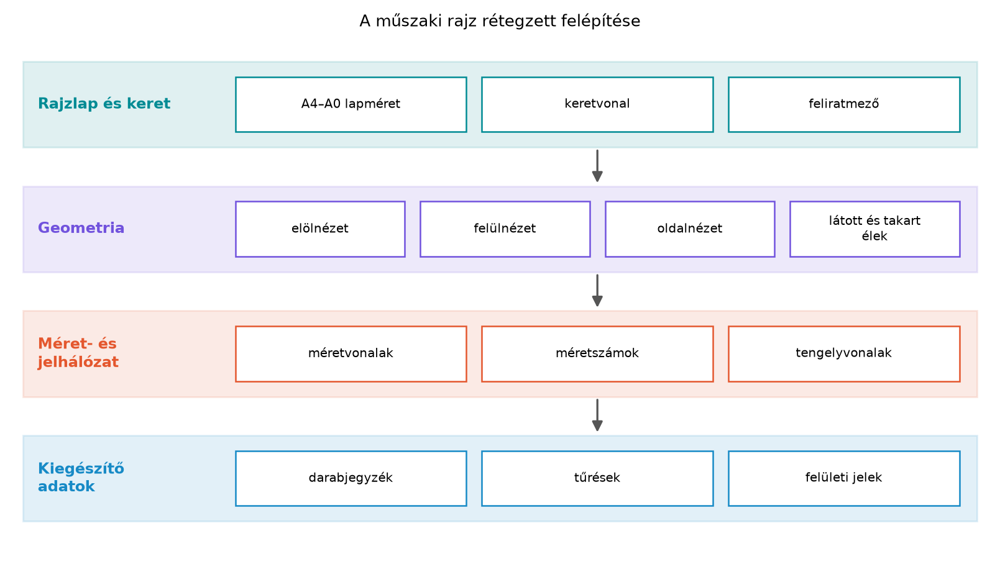

A műhelyben a legtöbb hiba nem a csavarkulcsnál kezdődik, hanem a
rajz félreértésénél. Amikor egy féknyereg-konzolról kell másolatot
készíttetni, vagy amikor egy gépjármű-villamossági kapcsolási rajzról
kell beazonosítani egy csatlakozót, a rajz a közös nyelv. Ha nem tudod,
hogy a rajzon hol van a felülnézet, melyik vonal jelent takart élet,
vagy mit jelent az 1:2 méretarány, akkor rossz alkatrészt
rendelhetsz, hibás vázlatot adhatsz a lakatosnak, vagy félreérted a
gyártói robbantott ábrát.
Ez az alfejezet azokat az alapokat tanítja meg, amelyekre a későbbi szerkezeti rajzok, hidraulikus kapcsolási rajzok és gépjármű-villamossági áramútrajzok épülnek. Előismeret A könyv használata és a szakma követelménytérképe alfejezet szintjén elég; a rajzeszközöket és a vonalzó/cirkalmazás alapjait fokozatosan vezetjük be.
Képzeld úgy a műszaki rajzot, mint egy többrétegű dokumentumot. Az első réteg a szabványos rajzlap: a lap mérete, a keret és a feliratmező. A második réteg a geometria: az elölnézet, a felülnézet és az oldalnézet, amelyek a darab kontúrjait, látható és takart éleit mutatják. A harmadik réteg a méret- és jelhálózat: méretvonalak, méretszámok és tengelyvonalak. A negyedik réteg a kiegészítő adatok: darabjegyzék, tűrések és felületi jelek. A négy réteg együtt teszi a rajzot egyértelművé.

Az ábra azt mutatja, hogy a rajzlap, a geometria, a méret- és jelhálózat és a kiegészítő adatok négy rétege hogyan épül egymásra. A gyakorlatban ezt a rétegződést akkor használjuk, ha ellenőrizzük, hogy egy alkatrészrajzon a nézet, a méret és a darabjegyzék nincs-e ellentmondásban.
A vetítést egy üvegdobozba tett alkatrészen lehet a legkönnyebben elképzelni. Az alábbi ábra (a) része egy furatos, L alakú tartót mutat az üvegdobozban: elölről, felülről és balról nézve a nézet a test mögötti képsíkra vetül. A (b) rész a kinyitott, síkba terített dobozt mutatja: az elölnézet középen, a felülnézet alatta, a bal oldalnézet jobbra kerül; a takart furat szaggatott, a tengelyvonal pontvonal. A HTML-változatban a doboz kinyitása lépésenként követhető, és összevethető az amerikai (A) elrendezéssel.
Definíció. A műszaki rajz (technical drawing) a műszaki termék alakjának, méreteinek, anyagainak, pontossági és felületi követelményeinek szabványos, egyértelmű közlése rajzjelekkel. A nézet (view) a tárgynak egy képsíkra előírt irány szerint vetített képe; a méretarány a rajzolt hossz és a valóságos hossz hányadosa.
Definíció. A vetület (projection) a tárgy pontjainak párhuzamos vetítősugarakkal történő leképezése a képsíkra. A későbbi Metszetek és szelvények és a(z) A fedélzeti hálózat felépítése, kapocsjelölés és áramútrajz alfejezet is ezt a vetületi szemléletet használja, csak ott a belső üreges alakzatot metszéssel, illetve az áramutak kapcsolási rajzát egyezményes jelekkel ábrázoljuk.
Rajzlapok. A műhelyben leggyakrabban A4-es és A3-as lapokkal dolgozunk, mert ezek elférnek a munkapadon, és a vázlathoz, jegyzőkönyvhöz elegendőek. A nagyobb szerelési rajzok A2–A0 lapokra készülnek.
| Jel | Lapméret (mm) | Jellemző műhelyi felhasználás |
|---|---|---|
| A4 | 210 × 297 | műhelyi vázlat, mérési jegyzőkönyv |
| A3 | 297 × 420 | kisebb alkatrészrajz, kapcsolási rajz |
| A2 | 420 × 594 | szerelési rajz, csőrendszer rajza |
| A1 | 594 × 841 | nagyobb összeállítási rajz |
| A0 | 841 × 1189 | teljes gép, elrendezési rajz |
Az értékek az ISO 216 A-sorozat tanulási értékei (ellenőrizendő: hatályos MSZ EN ISO 5457 rajzlapszabvány).
Feliratmező és darabjegyzék. A rajzlap jobb alsó sarkában lévő feliratmező (title block) azonosítja a rajzot: rajzszám, megnevezés, anyag, méretarány, vetítési mód, keltezés, valamint rajzoló és ellenőr neve. A darabjegyzék (parts list; Bill of Materials) tételszámmal, darabszámmal, megnevezéssel, rajzszámmal vagy szabványjelzettel, anyaggal és gyakran tömeggel sorolja fel az összeállítás elemeit. Az autószerelő a gyártói robbantott ábrán a tételszám alapján rendeli a pótalkatrészt.
Vonalfajták. A rajz csak akkor egyértelmű, ha a vonalak jelentését megtartjuk. Az alábbi táblázat a leggyakoribb vonalfajtákat foglalja össze.
| Vonal | Rajzi szerep |
|---|---|
| folytonos vastag | látható élek, látható kontúrok |
| folytonos vékony | méretvonal, segédvonal, vonalkázás, hajlítási vonal |
| szaggatott vékony | takart, nem látható élek |
| pontvonal vékony | tengelyvonal, szimmetriavonal |
| kétpont-vonal vékony | súlyvonal, szomszédos alkatrész, szélső helyzet, hajlítás előtti alak |
A vonalvastagságok szabványos sora például 0,25 mm, 0,35 mm, 0,5 mm, 0,7 mm, 1 mm; a vastag és a vékony vonal arány általában 2:1 (ellenőrizendő: ISO 128 vonalfajta-szabvány). A szabványos betűmagasságok pedig 2,5 mm, 3,5 mm, 5 mm, 7 mm, 10 mm, 14 mm, 20 mm (ellenőrizendő: hatályos MSZ EN ISO 3098 szabványírás-szabvány). A betű lehet dőlt vagy álló, de egy rajon belül egységes.
Összefüggés. A méretarány:
ahol
a rajzon mért hossz,
a valóságos hossz ugyanabban a mértékegységben. A kicsinyítést
1 : x, a nagyítást x : 1 alakban írjuk.
Például 1:2 azt jelenti, hogy a rajzhossz a valós hossz
fele, tehát
.
Szabály. A rajzra írt méretszám mindig a valóságos méretet jelöli, nem pedig a papíron lemért hosszt. A méretarány csak az ábrát méretezi, a méretszámot nem.
Előírás. A rajzlapok méretét az ISO 216 A-sorozat, a vonalfajtákat az ISO 128-sorozat, a feliratmező adattartalmát az ISO 7200 szabályozza; Magyarországon ezek honosított MSZ EN ISO jelzetű szabványokként jelennek meg. A vetítési módot a rajzlapon egy csonka kúpot és nézetirányt mutató jel különbözteti meg (ellenőrizendő: a hatályos szabványszámok és a jelölés pontos rajza).
Mielőtt vetületet rajzolnál, érdemes gyakorolni az alapvető síkmértani szerkesztéseket, mert ezek adják a tengelyvonalak, osztókörök, furatkiosztások és illesztési vonalak alapját.
Gyakorlat. Szabályos hatszög szerkesztése adott körben, osztókörhöz – például kerékagy-csavarfurat kiosztáshoz.
Az eredmény egy szabályos hatszög, amely például hat csavarfurat elrendezésének alapja lehet.
A három fő nézetet úgy képzeljük, mintha az alkatrészt egy üvegdobozba tennénk. Az alkatrészt párhuzamos vetítősugarakkal vetítjük a doboz lapjaira: elölnézetre, felülnézetre és oldalnézetre.
Elölnézet kiválasztása. Az elölnézet az a nézet, amely a legtöbb jellemző alakzatot mutatja. Gépjármű-alkatrésznél ez gyakran a szerelési irányból látható kép: például féknyeregnél a dugattyúoldal felőli nézet, csapágyperselynél a tengelyirányú nézet.
Európai és amerikai elrendezés. Magyarországon és az európai gyakorlatban az első térnegyedes vetítés (európai vetítés, jele: E) az általános: az elölnézet középen marad, a felülnézet az elölnézet alá, a bal oldalnézet az elölnézet jobb oldalára, a jobb oldalnézet a bal oldalára kerül. Az amerikai harmadik térnegyedes vetítés (jele: A) ezzel ellentétes: a felülnézet az elölnézet fölé, az oldalnézetek az azonos oldalra kerülnek. Az autóiparban amerikai beszállítói rajzokon is találkozhatsz A-vetítéssel, ezért mindig nézd a rajz fejlécét.
Látható és takart élek. A látható éleket folytonos vastag vonallal rajzoljuk. A takart, nem látható éleket szaggatott vékony vonallal jelöljük. A szimmetriatengelyt és a furat középvonalát pontvonallal.
Síklapú testek. Egy téglatest elölnézete általában téglalap, felülnézete és oldalnézete szintén téglalap. Egy „L” alakú tartó elölnézete és felülnézete együtt már megadja a hajlítás mértékét, de a furatok oldalirányú helyzetét gyakran csak az oldalnézet mutatja.
Forgástestek. Egy henger elölnézete téglalap, felülnézete kör. A tengelyvonal a kör közepén keresztező pontvonal. A csonkolt henger esetén a ferde vágás az egyik nézetben ferde egyenesként, a másik nézetben jellemzően ellipszisívekkel vagy torzult kontúrral jelenik meg.
Továbbvitt eredmény. A nézeti elrendezés, a látható/takart él megkülönböztetése és a tengelyvonalak használata közvetlenül kell a Metszetek és szelvények alfejezetben, ahol a belső alakzatot síkmetszéssel ábrázoljuk. Ugyanezt a „rajz–jármű–mérés hármast” használjuk a(z) A fedélzeti hálózat felépítése, kapocsjelölés és áramútrajz alfejezetben is, ahol a kapcsolási rajzot a járművön lévő vezetékekkel és mérési pontokkal együtt kell értelmezni.
A háromnézeti rajz pontos, de néha nehéz térben elképzelni. Az axonometrikus ábra (axonometric projection) egyetlen térbeli képet ad. A leggyakoribb az izometrikus ábra: a három tengely egymással 120°-os szöget zár be, a tengelyek mentén a hosszakat általában 1:1 arányban mérjük, és a körök ellipszisként látszanak. A dimetrikus és ferde axonometriák a forma jobb érzékeltetésére szolgálnak, de a kézi szerkesztésük kissé bonyolultabb.
A műhelyben a legfontosabb a szabadkézi műszaki vázlat: nem tökéletes szerkesztés, hanem arányos, méretezett, egyértelmű rajz. A jó vázlatban a nézetek elrendezése ugyanolyan szabályos, mint a szerkesztett rajzon, csak a vonalakat kézzel, arányosan húzzuk.
Az izometrikus vázlatot lépésenként építjük fel: (1) befoglaló hasáb vékony segédvonalakkal, (2) a fő kontúrok, (3) a furat ellipszisként, befoglaló rombuszba írva, (4) a látható élek vastagítása, a takart élek szaggatottan, (5) a fő méretek. Az ábra ugyanazt a tartót mutatja, mint a vetítési ábra, mellette a két vetülettel.
1. példa – kicsinyítés. Egy tartó valós hossza 120
mm, a rajzot 1:2 méretarányban kell elkészíteni.
Adott:
,
.
Keresett:
.
Képlet:
.
Behelyettesítés:
.
Ellenőrzés: a rajzolt hossz fele a valósnak, tehát a számítás helyes.
∎
2. példa – nagyítás. Egy kisméretű furat valós
átmérője 6 mm, a rajz 5:1 méretarányú.
Adott:
,
.
Keresett:
.
Képlet:
.
Behelyettesítés:
.
Ellenőrzés: nagyításnál a rajz nagyobb, ezért a 30 mm reális. ∎
3. példa – méretarány visszaszámolása. Egy rajzon
mért hossz 21 mm, a rajz 1:4 kicsinyítésű. A valós
hossz:
.
Ez a számítás akkor fontos, ha a vázlatról ellenőrizzük, hogy az alkatrész tényleg elfér-e a beépítési helyen.
Egy műszaki rajzot vagy vázlatot ugyanúgy ellenőrizni kell, mint egy beépített alkatrészt. Ellenőrzőlista:
Rajz–jármű–mérés hármas. A rajz értelmezése akkor válik biztonságossá, ha a rajzot, az alkatrészt a járművön és a mérési eredményt együtt használjuk. Ha a rajzon egy furattávolság 84 mm, a járművön a tolómérő pedig 83,5 mm-t mutat, akkor vagy nem azonos rajzról van szó, vagy az alkatrész kopott/elcsúszott.
Egy kisteherautóhoz egyedi fékcsőtartó konzolt kell készíttetni, mert
a gyári tartó már nem beszerezhető. A szerelő először szabadkézi
vázlatot készít. Felveszi a konzol három fő nézetét: elölnézetben a
hajlítás alakját, felülnézetben a furatok helyét, oldalnézetben pedig a
lemez vastagságát és a hajlítási szöget. A méreteket a járművön
tolómérővel ellenőrzi, majd a vázlatra 1:2 méretarányt
jelöl, bár a darabot valós méretek alapján gyártják. A lakatos a
vázlatról dolgozik, és a furattávolságot a rajz szerint 84 mm-re fúrja.
Ha a szerelő kihagyta volna az oldalnézetet, a hajlítás iránya
bizonytalan maradt volna; ha a takart furatot folytonos vastag vonallal
rajzolja, a lakatos látható élet, nem pedig hátsó furatot lát, és rossz
helyre jelöl.
Cél. Egyszerű, méretezett háromnézeti szabadkézi vázlat készítése egy járműalkatrészről vagy tanműhelyi gyakorlódarabról.
Alkatrész- és rajzadat-azonosítás. Rögzítsd a darab megnevezését, anyagát, a jármű típusát vagy a tanműhelyi gyakorlódarab jelét, a méretarányt, a vetítési módot, a vázlat készítőjét és dátumát.
Szerszámok, mérőeszközök, anyagok. HB és 2H ceruza, radír, vonalzó, derékszögű vonalzó, körző, sablon, mérőszalag és tolómérő. A méréshez legyen kéznél a mérendő alkatrész vagy annak pontos fényképe.
Biztonsági korlát. A feladat tanműhelyi környezetre, oktató felügyeletére és a gyártói javítási utasítás betartására vonatkozik; a megadott értékek tanulási példák. A körzőt és a mérőeszközöket heggyel/éles mérőfelülettel előre soha ne szállítsd; a rajzasztal legyen tiszta, a levágott ceruzahegy ne kerüljön a padlóra csúszásveszélyként.
Munkalépések.
Ellenőrzési pontok. A nézeti téglalapok arányosak-e? A méretarányszámításnál a rajzméret = valós méret × M? A feliratmező hiánytalan-e? A furat tengelyvonalai megvannak-e minden nézetben?
Tipikus szerelési/rajzolási hibák. A méretarányszámot összetévesztik a valós mérettel; az oldalnézetet amerikai elrendezésbe teszik; a takart élet folytonos vastaggal rajzolják; a darabjegyzék tételszámát nem írják fel a rajzra.
Dokumentálás. A vázlatra kerüljön dátum, készítő, méretarány, anyag és a mérésnél használt eszköz. A szervizkönyvben vagy munkalapon hivatkozz a vázlat azonosítójára.
1:2 jelet úgy olvassa, hogy a rajzra írt
méretszámot is felezni kell. Helyesen a méretszám a valós méret, az
ábrát méretezi a méretarány.1:2 méretaránynál a rajzra írt
méretszám a valós méret fele.4:1. Mekkora
a valós hossz?1. feladat (A). Egy alkatrész valós hossza 90 mm.
Számítsd ki a rajzhosszt 1:3 méretaránynál.
2. feladat (A). A rajzon mért furatátmérő 15 mm, a
rajz 5:1 nagyítású. Mekkora a furat valós átmérője?
3. feladat (B). A4-es álló rajzlapon hasznos
rajzmezőnek 180 mm szélességet feltételezünk. 1:2
méretaránynál mekkora valós hossz fér el ebben a szélességben?
4. feladat (B). Rajzold le szavakkal egy „L” alakú tartó európai háromnézeti elrendezését. Add meg, melyik nézet hová kerül, és melyik élet rajzolnád szaggatottal.
5. feladat (C). Egy Ø50 mm átmérőjű, 80 mm hosszú
csapot 1:2 méretarányban akarsz ábrázolni. Add meg az
elölnézet és felülnézet rajzméreteit. Magyarázd meg, miért nem elég
önmagában a felülnézet a csap hosszának és átmérőjének együttes
közlésére.
6. feladat (D). Műhelyi hiba elemzése: egy tanuló a
vázlatán a bal oldalnézetet az elölnézet bal oldalára helyezi, a hátsó
furatot folytonos vastag vonallal rajzolja, és a méretszámokat felezi,
mert a rajz 1:2. Sorold fel a hibákat, és írd le a helyes
eljárást.
1. feladat (A).
Adott:
,
.
Keresett:
.
.
Ellenőrzés: kicsinyítésnél a rajzolt hossz kisebb, tehát a 30 mm reális.
∎
2. feladat (A).
Adott:
,
.
Keresett:
.
.
Ellenőrzés: nagyításnál a valós méret kisebb, tehát a 3 mm reális. ∎
3. feladat (B).
Adott: hasznos rajzszélesség
,
.
Keresett: a legnagyobb valós hossz.
.
Tehát 360 mm valós hossz fér el. ∎
4. feladat (B).
Az európai elrendezésben az elölnézetet középre rajzoljuk, ez mutatja a tartó elülső kontúrját és a hajlítás magasságát. Alá kerül a felülnézet, amely a hajlás vízszintes kiterjedését és a furatok helyét mutatja. Jobb oldalra kerül a bal oldalnézet, amely a tartó szélességét, anyagvastagságát és a hajlítás irányát egyértelműsíti. Szaggatott vonallal rajzolnánk azt a hátsó furatot vagy hátsó élet, amely az adott nézetben takarásba esik.
5. feladat (C).
A csap elölnézete téglalap, felülnézete kör. 1:2
méretaránynál a rajzon a csap hossza
,
az átmérő
.
A felülnézet önmagában csak az átmérőt mutatja, a hosszt nem, az
elölnézet pedig a hosszt és az átmérő egyik kontúrját, de a kör
keresztmetszetet nem. Ha azonban az elölnézetben az átmérő méretszáma
elé a Ø jelet írjuk (Ø50), a hengeres csapot egyetlen nézet egyértelműen
megadja; a kör alakú nézetet csak akkor rajzoljuk, ha a homlokfelületen
furat, horony vagy lapolás van. A tengelyvonalat mindig berajzoljuk.
6. feladat (D).
A tanuló hibái: 1. Európai vetítésnél a bal oldalnézet az elölnézet
jobb oldalára kerül, nem balra. 2. A hátsó furat takart él, ezért
szaggatott vékony vonallal kell rajzolni. 3. A méretszámokat nem szabad
felezni; a 1:2 csak az ábrát kicsinyíti, a méretszámok
valós értékek maradnak. 4. A rajzon fel kell tüntetni a vetítési módot,
a méretarányt, a feliratmezőt és a darabjegyzéket.
Helyes eljárás: elölnézet középre, felülnézet alá, bal oldalnézet jobbra; látható él folytonos vastag, takart él szaggatott, tengelyek pontvonal; a méretszámok valós méretek; a vázlatot ellenőrizd a járművön mért értékkel.
A műszaki rajz a szerelő közös nyelve. A rajzlapot az ISO 216
A-sorozat szerint választjuk (A4: 210 mm × 297 mm), a feliratmező
azonosítja a rajzot, a darabjegyzék pedig tételszám szerint sorolja fel
az alkatrészeket. A vonalfajták jelentése kötött: folytonos vastag a
látható él, folytonos vékony a méret- és segédvonal, szaggatott a takart
él, pontvonal a tengely. A méretarány a rajzhossz és a valós hossz
hányadosa; 1:2 kicsinyítés, 2:1 nagyítás. A
rajzra írt méretszám mindig a valós méret marad. Az európai első
térnegyedes vetítésben az elölnézet alatt van a felülnézet, a bal
oldalnézet az elölnézettől jobbra kerül; az amerikai vetítés ezzel
ellentétes, ezért a fejlécet mindig ellenőrizni kell. A szabadkézi
vázlat arányos, méretezett háromnézeti rajz, amelyet a járművön mérve
ellenőrzünk. Továbbvitt eredmény. A vetületi nézetek, a
takart élek és a tengelyvonalak szabályait a metszeti ábrázolásban,
valamint a gépjármű-villamossági áramútrajzok olvasásában használjuk
később.